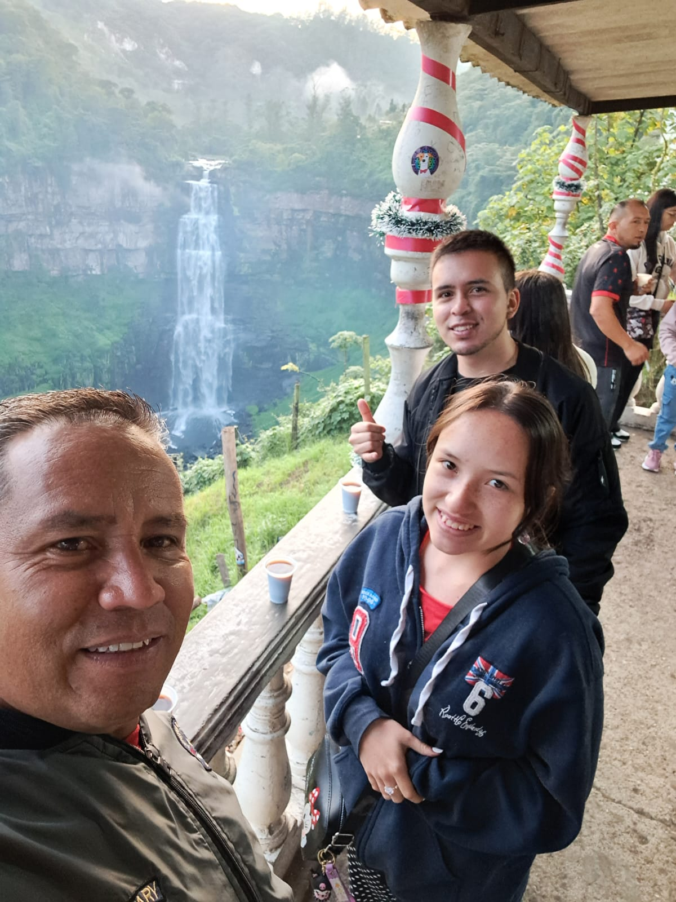

Esto es solo un poco de todo lo que tenemos en nuestro Restaurante "Okinawa no Chinmi". Donde ofrecemos variedad de delicias japonesas, inspirado en sabores tradicionales, Okinawa no Chinmi ofrece una interpretacion fresca y creativa de la cocina japonesa.
Reservas
Para poder hacer tu reserva contactanos por nuestras redes sociales como Restaurante_Okinawa.
Para poder hacer tu reserva tienes que mandarnos:
Tamaño del grupo
Fecha
Horario
RESERVA AHORA
Eventos Privados
¿Planeas un Evento?
Ofrecemos menus y decoraciones adaptados a tu evento y presupuesto. Desde Cumpleaños, Reuniones Privadas, Banquetes, Fiestas, estre otras cosas.
EMPIEZA TU PLANEACION
LAURA SOFIA GARZON GIRALDO
Esto es un poco de mi Proyecto de Vida y lo que quiero para mi futuro. No solo quiero un restaurante para mi proyecto de vida, tambien quiero estudiar mas cosas que me gustan o que me interesan como estudiar en la universidad THE CULINARYINSTITUTE OF AMERICA en ESTADOS UNIDOS o tambien en la universidad INSTITUT PAUL BOCUSE en FRANCIA, estas universidades ofrecen una especializacion en la gastronomia que es un tema que me interesa mucho.
Otras profesiones que quisiera estudiar en mi futuro seria la Criminalistica en la universidad CENTRO DE ESTUDIOS AVANZADOS EN CIENCIAS FORENSES PERICIALES Y JURÍDICAS en Mexico y tambien quisiera estudiar Teatro para ser actriz pero tengo que tener 3 disciplinas que son: La Interpretacion, El Canto y La Danza.
MI PASADO
En mi gestacion mi mami sufria de muchos mareos y tambien de muchos antojos, cuando le hicieron las ecografias en todas salia que era un niño por lo tanto lo unico de ropa, cosas materiales y el entorno en el que iba a estar eran cosas de niño, ya cuando naci fue cuando se dieron cuenta que no era un niño pero de igual forma ellos me seguian amando ya que el anhelo era tener una niña porque ya cada uno habia tenido por su parte un hombre.
Cuando entre al jardin fue muy chevere porque me iba bien y ademas de eso la profesora me queria mucho y tambien queria mucho a mis papas, cuando entre a primaria estaba en otro colegio y alla solo tenia una amiga porque yo no era tan social y aparte de eso me daba mucha pena hablar con cualquier persona pero en ambito academico me iba muy bien, siempre quedaba en los primeros puestos con muy buenas notas. En segundo de primaria me cambie al Republica Dominicana pero el cambio de colegio no fue tan duro ya que me seguia yendo muy bien y en este colegio si tenia mas amigos y me gustaba mas estar en este colegio. Cuando pase de primaria a bachillerato a compracion de mi hermano a mi no se me dificulto tanto, de hecho me fue muy bien y me lleve bien con los profesores. En el ambito academico en algunas materias bajaba y subia el promedio pero he logrado recuperar y aprender mas de ellas. En el ambito familiar teniamos problemas como todas las familias pero hemos logrado superarlas y poder hablar comodamente entre nosotros. Por suerte hemos podido viajar mucho y hace poquito pudimos viajar en avion y conocer el mar y eso nos ha unido mas como familia, ese viaje nos hizo reflexionar sobre algunas cosas o peleas que han pasado en nuestra familia, tambien nos hizo amar mas el mundo y todas las cosas que tiene.

MI PRESENTE
En mi presente sigo estudiando para ser una de las mejores aunque aveces no lo consigo o no soy lo suficientemente buena pero igual lo intento hacer bien todo. En el ambito familiar todo va muy bien, tal vez nos mudemos pronto pero no nos vamos lejos. En este momento estoy ahorrando y buscando un trabajo para poder comprarme mis cosas y ayudar a mi familia con algunas cosas.
PODCAST Y VIDEOS QUE ME GUSTAN
Estos son algunos de los podcast y algunos videos que me interesan o me gustan.